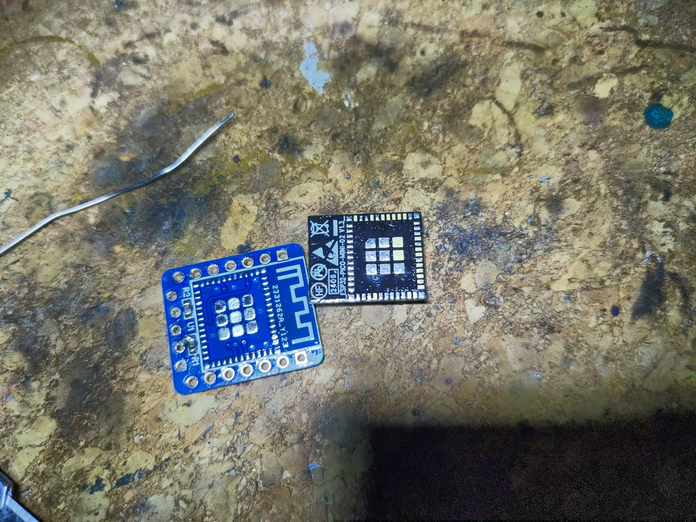
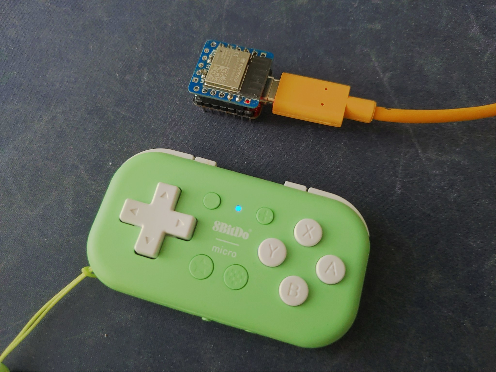
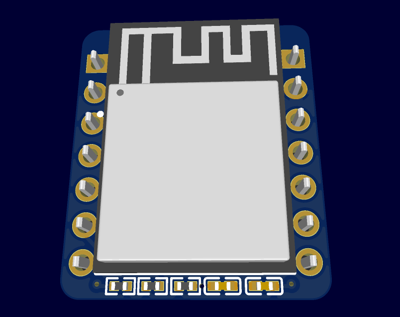

First Prototype Success¶
Published on 2024-10-15 in BlueJoy.
Rushing the design is bad, but jumping to conclusions is also not great. Turns out that the problem is not with the crystal at all. The module I’m using does contain the 40MHz crystal that is necessary for the chip to work, and the additional 32.7kHz crystal is entirely optional. My redesign was a complete waste of time and money. Sadly, it can’t be cancelled anymore, but the boards should work perfectly fine anyways.
What changed? Well, I had a chat with UnexpectedMaker, who has immense experience with the ESP32 chips and modules, and he explained it to me. He also pointed me in the right direction to get my prototype working, and that was resoldering the module. I thought that I did a pretty good job soldering it, as it was all well aligned, and there were no visible problem. But when I desoldered it, this is what I saw:
As you can see, many of the pads weren’t even as much as touched by solder. You can still see the golden ENIG finish on them. So I tinned both the PCB and the module pads, applied a generous amount of flux, and soldered the module on again, making sure I apply plenty of pressure all around it.
And the effect was immediate. After some fumbling with connecting the USB to UART adapter, I got the board programmed, and it works:
There is one more good thing that came out of that conversation. When I said that I don’t really need all that flash and ram that this module has, UnexpectedMaker pointed out that the ESP32-MINI-1 module has the same width, only being a little bit longer, and is cheaper because it doesn’t have the extra ram and only has a small flash chip. So I went ahead and redesigned the PCB to use that module. I had to change the programming header to pads on the bottom of the module, and had to switch to smaller resistors and capacitors, but it fits, and the routing is less of a mess.
It’s going on the same slow shipping as the boards with the crystal, so I will get to them some time next month when they arrive. For now, I have the working first prototype to use.